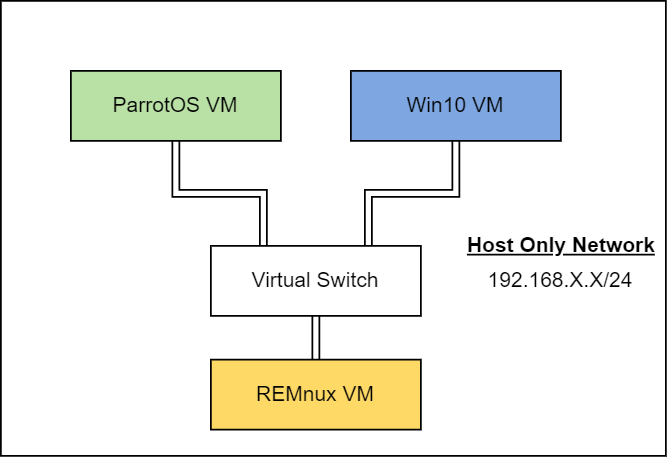
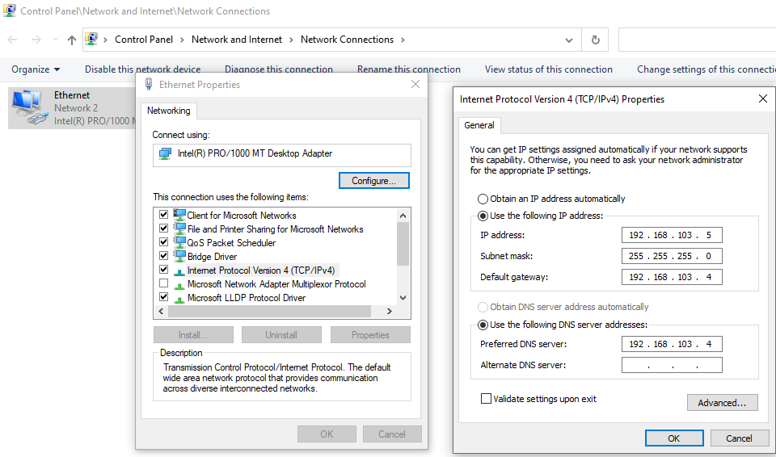
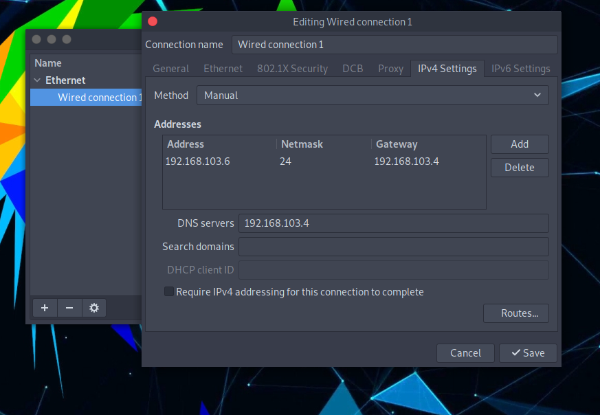

This will be a basic tutorial on how to setup a malware analysis lab. Of course this isn’t the only way to do it and you might need to have a different setup depending on what you’re trying to achieve in your analysis. I will try to make things simple and explain each step.
Requirements
For this setup, you will need the following:
- VirtualBox (https://www.virtualbox.org/)
- REMnux VM (https://remnux.org/#distro)
- Win10 VM (https://developer.microsoft.com/en-us/windows/downloads/virtual-machines/)
- ParrotOS VM (https://www.parrotsec.org/virtual/)
- enough RAM for running at least REMnux and one of the other VMs
You can also use ISO files instead of OVA files but they’re slower to setup as they require extra steps.
Setup overview
What we’re trying to achieve is the following network setup:
 Figure 1: Network Diagram
We’ll only permit communication between the VMs in order to isolate the network. I recommend you take a snapshot of each of the VMs before starting the setup, especially for the windows VM since it expires in 30 days.
Think of snapshots as save files in video games; you can always load them in case you make a mistake.
Setting up Virtual Machines - Tools
First, keep the network adapter on the machines as NAT because we will have to fetch packages and download programs.
REMnux
REMnux is a Ubuntu-based VM created by Lenny Zeltser and comes with malware analysis tools like Wireshark, Ghidra and so on.
Normally, it should work out of the box. If you get an error message saying “Oh no! Something went wrong”, then I suggest you try the following:
1
2
3
sudo apt-get update && sudo apt-get dist-upgrade
remnux upgrade
reboot
Win10
I recommend installing the following tools:
- Process hacker
- procdot
- Process Monitor (ProcMon)
- IDA Free
- Ghidra
- Windbg / x64dbg
- PEstudio
- Common File Format Explorer
- Wireshark
- Autoruns
- Python3
- Sysinternal tools: strings, procdump, head, tail, grep.
- HxD
Of course, you may want to use other tools depending on your use case. (You can install the tools from FireEye https://www.mandiant.com/resources/flare-vm-update)
Take a snapshot after installing the tools to avoid re-installing them if you roll back to the initial snapshot
ParrotOS
ParrotOS comes with a lot of pentesting tools so you don’t need to install a lot of additional tools (again, depending on your use case).
Setting up Virtual Machines - Network
Once you’ve had your tools installed, turn off all 3 VMs and change their network adapters to Host-only (it’s NAT by default).
Double check that the host network in VirtualBox’s Host Network Manager is properly configured. Enabling the DHCP server would save you some time in the setup, otherwise you’ll have to manually type each machine’s IP in their corresponding network settings.
Now you can boot up the VMs. You don’t necessarily need to have both ParrotOS and Win10 running at the same time, just run one of them alongside REMnux.
REMnux
Now that the VM is up and running, open a terminal, run ifconfig and write down the machine’s IP. In my case it was 192.168.103.4. We will use this as the gateway and DNS server on the other machines.
Win10
You will need to modify the network adapter within windows. Go to Control Panel -> Network and Internet -> Network Sharing Center -> Change adapter settings. You will see Ethernet there, right-click and go to Properties. Select Internet Protocol Version 4 (TCP/IPv4) and then Properties. You should check the radio button Use the following IP address and set a valid IP address within the Host-only network range (in my case, I put 192.168.103.5). Set the default gateway and the DNS server to the REMnux IP, and then hit OK.
 Figure 2: Win10 Ethernet Adapter Configuration
Double check with ipconfig /all in cmd. You should see the same information you entered previously. Also you should be able to ping the REMnux machine by now:
C:\Users\jdoe>ping 192.168.103.4
Pinging 192.168.103.4 with 32 bytes of data:
Reply from 192.168.103.4: bytes=32 time=1ms TTL=64
Reply from 192.168.103.4: bytes=32 time=1ms TTL=64
Ping statistics for 192.168.103.4:
Packets: Sent = 2, Received = 2, Lost = 0 (0% loss),
Approximate round trip times in milli-seconds:
Minimum = 1ms, Maximum = 1ms, Average = 1ms
Control-C
^C
For the REMnux VM to be able to ping the Win10 VM, you will need to disable the firewall: Control Panel -> System and Security -> Windows Defender Firewall -> Turn Windows Defender Firewall on or off -> Turn off for private and public networks.
ParrotOS
Go to System -> Preferences -> Internet and Network -> Advanced Network Configuration and then click on the wheel button. A new window pops up, go to the tab IPv4 Settings and select Manual as method.
Manually Add a valid IP address (in my case 192.168.103.6) with mask 24 and gateway the REMnux IP. Don’t forget to also set the DNS server to the REMnux IP.
Finally, disconnect from the Wired Connection 1 and reconnect.
 Figure 3: ParrotOS Ethernet Configuration
And… you should be done. Both the ParrotOS and the REMnux VMs should be able to ping each other.
Conclusion
So… what’s next? Get a malware sample and start analysing it on your VMs. Be careful to always run malware samples in an isolated environment on your virtual machines. REMnux is able to reply to a VM with accept-all-ips start enp0s3 which is helpful if a malware tries to test for a connection. Also, you might want to do static analysis before trying to run anything.
Resources
- https://0x1.gitlab.io/security/Malware-Analysis-Tools-List/
- https://www.nakivo.com/blog/virtualbox-network-setting-guide/
- https://zeltser.com/
- https://www.youtube.com/watch?v=20xYpxe8mBg
- https://www.youtube.com/watch?v=F1LE56QQ7iA
- https://blog.didierstevens.com/